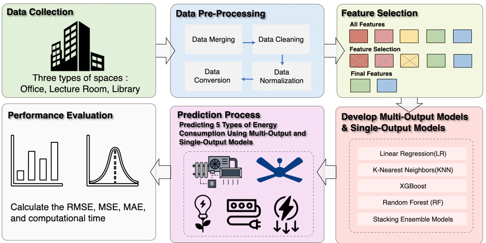
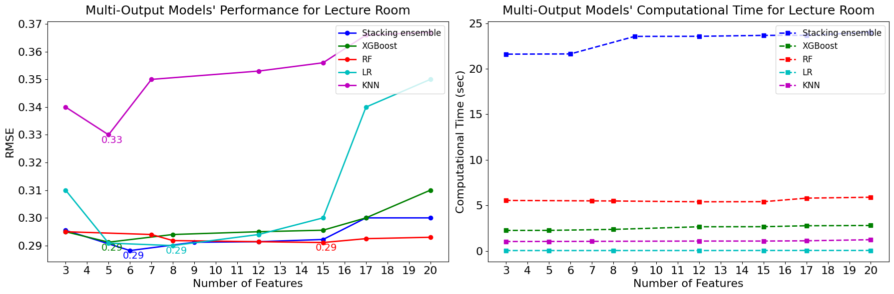

Overview
In this project, I developed a multi-output prediction model capable of simultaneously forecasting several related target variables from time-series data. This approach not only improved predictive performance but also significantly enhanced computational efficiency by avoiding redundant computations compared to building separate models for each target.
 My Contributions
- Model Design: Designed a neural network architecture that outputs multiple correlated variables in a single forward pass.
- Feature Engineering: Selected and engineered relevant features to capture temporal dependencies effectively.
- Training Optimization: Applied techniques such as loss balancing and multi-task learning strategies to optimize performance across outputs.
- Evaluation: Conducted extensive experiments comparing the multi-output model with traditional single-output models, demonstrating improvements in both accuracy and speed.
Skills and Tools Used
- Python (TensorFlow, Keras, Scikit-learn)
- Time-series Data Analysis
- Multi-task Learning Techniques
- Performance Optimization and Validation
Outcome
The multi-output model achieved up to a 15% improvement in total prediction accuracy while reducing inference time by approximately 30%. These results highlighted the model’s effectiveness, especially for real-world applications where multiple forecasts are required simultaneously, such as smart building systems, energy demand forecasting, and environmental monitoring.
← Back to Portfolio